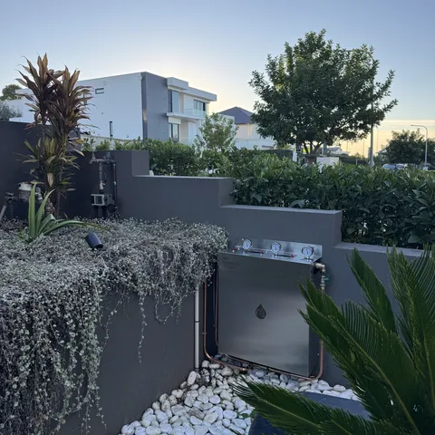
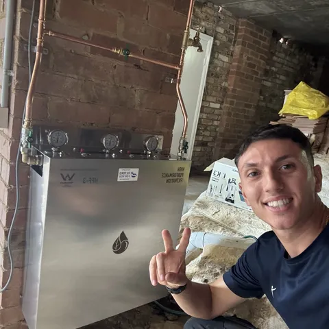
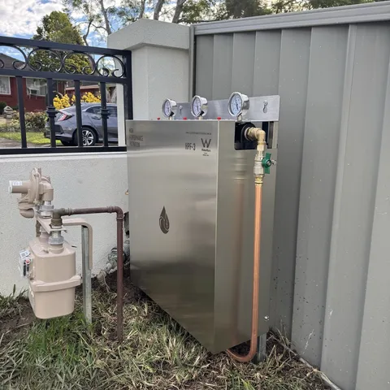

Whole House Filtration System
Pure Homefrom $3,850installed
- Chlorine and chloramines out of every tap
- Sediment, rust and microplastics caught at the mains
- No pool water taste or smell, any tap
- The good minerals stay in



Real installs, real Sydney homes